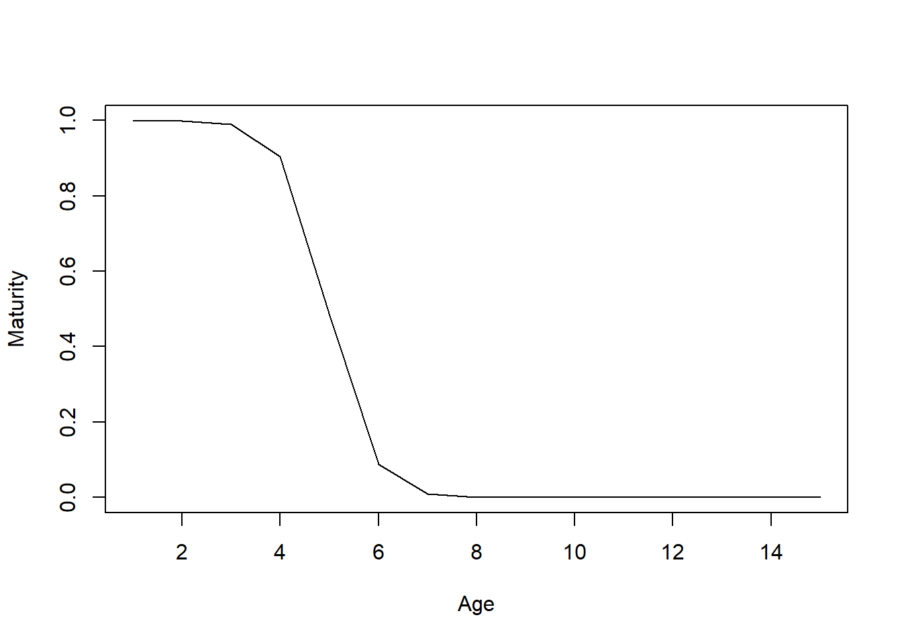

Chapter 27 Custom Parameters
By default, DLMtool samples the operating model parameters from a uniform distribution. Because the parameters are sampled independently, it is not possible to generate correlated samples. However, the cpars slot in the OM object can be used to pass custom samples into the MSE.
The addition of the cpars slot provides a lot of flexibility to the DLMtool, and allows users full control of all parameters used in the model. For example, it is possible to generate operating models directly from the output of common stock assessment packages using functions in DLMtool (e.g SS2DLM for Stock Synthesis 3, and iSCAM2DLM for a iSCAM model - Note: these functions have now been moved to MSEtool). These functions take the correlated parameter values from the output of the stock assessment and provide them to DLMtool via the cpars slot, resulting in an operating model that is conditioned on the stock assessment.
The cpars feature is being continually developed as more features are requested for DLMtool.
27.1 Valid cpars names
The cpars slot requires a named list containing the custom parameter values. You can see the valid names for cpars by typing:
## Var. Dim. Desc. Type
## 1 R0 numeric vector length nsim Virgin recruitment Stock
## 2 M numeric vector length nsim Natural mortality Stock
## 3 Mexp numeric vector length nsim Lorenzen M-weight exponent Stock
## 4 Msd numeric vector length nsim Inter-annual variability in M Stock
## 5 Mgrad numeric vector length nsim Gradient in M Stock
## 6 h numeric vector length nsim Steepness StockThe custom parameters are divided into 5 different types: Stock, Fleet, Obs, and Imp corresponding to the OM components of the same names, and internal for internal operating model parameters that over-ride or ignore the values in the OM slots.
A warning message will alert you if variables appear in the named cpars list that are not in validcpars(), and these will be ignored in the MSE.
27.2 Correlated samples
As the cpars feature is used to provide correlated samples to the MSE, it is important that the same number of custom parameters are provided for each variable. In most cases, this is simply a vector nsim long.
For example, if you wish to supply correlated samples of the von Bertalanffy growth parameters, you would create three vectors of length nsim containing the samples of Linf, K, and t0.
If the vectors are shorter than nsim they will simply be recycled. An error message will alert you if the vectors are not the same length.
As a demonstration, we will use the ForceCor function to generate correlated samples of M, K, L50, and Linf and examine the cpars slot in the resulting OM object:
## Warning: Life-history correlations are now calculated using data from FishBase.
## Consider using `LH2OM` instead.
## List of 4
## $ M : num [1:48] 0.382 0.39 0.396 0.353 0.4 ...
## $ K : num [1:48] 0.174 0.176 0.187 0.163 0.196 ...
## $ L50 : num [1:48] 84.8 86.6 88.9 88.3 88 ...
## $ Linf: num [1:48] 132 132 130 134 128 ...You can see that the OM@cpars slot is a list of length 4 and contains named vectors with 48 correlated samples of the four parameters.
Because the OM@cpars slot contains these values, the M, K, L50, and Linf values in the OM, e.g.OM@M will be ignored.
Any additional custom parameters can be added to cpars using this same approach. For example, to provide custom (in this case uncorrelated) samples of t0:
## List of 5
## $ M : num [1:48] 0.382 0.39 0.396 0.353 0.4 ...
## $ K : num [1:48] 0.174 0.176 0.187 0.163 0.196 ...
## $ L50 : num [1:48] 84.8 86.6 88.9 88.3 88 ...
## $ Linf: num [1:48] 132 132 130 134 128 ...
## $ t0 : num [1:4] -0.768 -0.759 -0.203 -0.16827.3 Custom internal parameters
It is also possible to supply custom generated time-varing values or other values to internal parameters using the cpars slot. For example, time-varying natural mortality or selectivity patterns. These are referred to as internal custom parameters.
A list of valid internal cpars can be found by using the validcpars function. Here, for presentation purposes, we print just the first two columns:
## Var. Dim.
## 1 Cbias numeric vector length nsim
## 2 CAL_bins numeric vector
## 3 CAL_binsmid numeric vector length(CAL_bins)-1
## 4 L95 numeric vector length nsim
## 5 Perr_y numeric matrix dim = c(nsim, maxage+proyears+nyears-1)
## 6 M_at_Length numeric matrix dim = c(n.lengths, 3)
## 7 Asize numeric matrix dim = c(nsim, narea)
## 8 Karray numeric matrix dim = c(nsim, nyears+proyears)
## 9 Linfarray numeric matrix dim = c(nsim, nyears+proyears)
## 10 Marray numeric matrix dim = c(nsim, nyears+proyears)
## 11 Krand numeric matrix dim = c(nsim, nyears+proyears)
## 12 Linfrand numeric matrix dim = c(nsim, nyears+proyears)
## 13 Mrand numeric matrix dim = c(nsim, nyears+proyears)
## 14 ageM numeric matrix dim = c(nsim, nyears+proyears)
## 15 age95 numeric matrix dim = c(nsim, nyears+proyears)
## 16 M_ageArray numeric array dim = c(nsim, maxage, nyears+proyears)
## 17 Mat_age numeric array dim = c(nsim, maxage, nyears+proyears)
## 18 LatASD numeric array dim = c(nsim, maxage, nyears+proyears)
## 19 Wt_age numeric array dim = c(nsim, maxage, nyears+proyears)
## 20 Len_age numeric array dim = c(nsim, maxage, nyears+proyears)
## 21 mov numeric array dim = c(nsim, maxage, narea, narea) OR dim = c(nsim, maxage, narea, narea, nyears+proyears)
## 22 initD numeric vector length nsim
## 23 binWidth numeric value of length 1
## 24 Find numeric matrix dim = c(nsim, nyears)
## 25 dFfinal numeric vector length nsim
## 26 V numeric array dim = c(nsim, maxage, nyears+proyears)
## 27 retA numeric array dim = c(nsim, maxage, nyears+proyears)
## 28 retL numeric array dim = c(nsim, nCALbins, nyears+proyears)
## 29 lenMbias numeric vector length nsim
## 30 Mbias numeric vector length nsim
## 31 Kbias numeric vector length nsim
## 32 t0bias numeric vector length nsim
## 33 Linfbias numeric vector length nsim
## 34 LFCbias numeric vector length nsim
## 35 FMSYbias numeric vector length nsim
## 36 FMSY_Mbias numeric vector length nsim
## 37 BMSY_B0bias numeric vector length nsim
## 38 Irefbias numeric vector length nsim
## 39 Brefbias numeric vector length nsim
## 40 Crefbias numeric vector length nsim
## 41 Dbias numeric vector length nsim
## 42 hbias numeric vector length nsim
## 43 hsim numeric vector length nsim
## 44 Data Object of class Data
## 45 CostCurr numeric vector length nsim
## 46 RevCurr numeric vector length nsim
## 47 Response numeric vector length nsim
## 48 CostInc numeric vector length nsim
## 49 RevInc numeric vector length nsim
## 50 LatentEff numeric vector length nsim
## 51 AddIerr array dim nsim, n.ind, nyears+proyears
## 52 AddIbeta matrix nrow=nsim and ncol=n.indWe can see that there are 52 valid internal cpars. The internal cpars are parameters that are derived from one or more of the OM slots.
For example, M_ageArray is an internal array that describes the natural mortality rate at age for each simulation and year. Typically, this array is derived from the M, M2, Mexp, Mgrad and Msd slots in the Stock object. Using the cpars feature we can override these values in the OM and provide our own values for M for each simulation, age, and year.
Information on the M_ageArray variable in cpars can be found in the output of the validcpars function:
## Var. Dim. Desc. Type
## 15 age95 numeric matrix dim = c(nsim, nyears+proyears) Age at 95% maturity by simulation and year internalTo generate our own values of the M-at-age array we would populate OM@cpars$M_ageArray with an array with dimensions OM@nsim, OM@maxage, OM@nyears+OM@proyears.
The cpars feature is very powerful but also somewhat complicated, especially if you are using internal custom parameters. For example, by default DLMtool uses the OM@L50_95 slot (the increment between length at 50% maturity (OM@L50) and length at 95% maturity (L95)) to calculate the internal parameter L95. This is neccessary to ensure that L95 is always greater than L50. Using internal parameters in cpars it is possible to pass values to L95 directly, however now it is up to you to make sure that the L95 values are greater than the corresponding L50 values, otherwise you end up with a species where fraction mature decreases with age/size!
## Loading operating model## valid custom parameters (OM@cpars) found:
## L95## Optimizing for user-specified movement## Optimizing for user-specified depletion in last historical year## 7 simulations have final biomass that is not close to sampled depletion## Re-sampling depletion, recruitment error, and fishing effort## Calculating historical stock and fishing dynamics## Calculating MSY reference points for each year## Calculating B-low reference points## Calculating reference yield - best fixed F strategy## Simulating observed data## Returning historical simulationsdata.frame(L50=temp@SampPars$L50, L95=temp@SampPars$L95, diff=temp@SampPars$L95 - temp@SampPars$L50)## L50 L95 diff
## 1 89.29632 80 -9.296324
## 2 85.94840 80 -5.948397
## 3 83.02974 80 -3.029737
## 4 82.72569 80 -2.725685
## 5 87.00959 80 -7.009591
## 6 82.88771 80 -2.887705
## 7 90.17793 80 -10.177931
## 8 83.81742 80 -3.817423
## 9 87.81777 80 -7.817765
## 10 84.97352 80 -4.973519
## 11 88.37993 80 -8.379927
## 12 87.54484 80 -7.544837
## 13 89.68775 80 -9.687752
## 14 90.60570 80 -10.605700
## 15 90.11753 80 -10.117530
## 16 89.93550 80 -9.935500
## 17 83.79199 80 -3.791989
## 18 82.63972 80 -2.639718
## 19 85.90402 80 -5.904019
## 20 89.30135 80 -9.301353
## 21 86.76698 80 -6.766979
## 22 83.99262 80 -3.992624
## 23 88.38363 80 -8.383626
## 24 84.21836 80 -4.218363
## 25 81.24307 80 -1.243072
## 26 81.36054 80 -1.360544
## 27 83.45353 80 -3.453532
## 28 86.99403 80 -6.994028
## 29 83.24743 80 -3.247426
## 30 87.87676 80 -7.876755
## 31 82.32874 80 -2.328738
## 32 86.58952 80 -6.589517
## 33 90.09740 80 -10.097400
## 34 84.91566 80 -4.915659
## 35 83.48538 80 -3.485384
## 36 90.99788 80 -10.997882
## 37 85.78385 80 -5.783854
## 38 90.74749 80 -10.747493
## 39 83.28700 80 -3.286995
## 40 84.65751 80 -4.657509
## 41 88.04526 80 -8.045262
## 42 82.42479 80 -2.424794
## 43 84.60668 80 -4.606678
## 44 84.31737 80 -4.317373
## 45 90.17543 80 -10.175434
## 46 89.00868 80 -9.008677
## 47 85.91241 80 -5.912413
## 48 86.02250 80 -6.022501
We have tried to include checks to ensure the model is simulating credible population dynamics, but as this somewhat contrived example shows, care is needed when using OM@cpars to specify internal parameters. We recommend first running the model with Hist=TRUE as in the above example and examining the generated values to ensure the parameters you have added in OM@cpars are being used as expected.
If you find that this is a feature you wish to use but are unclear how to do it, bug us with an email!